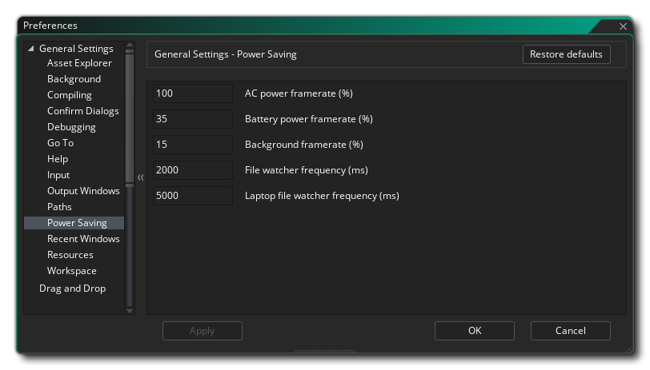
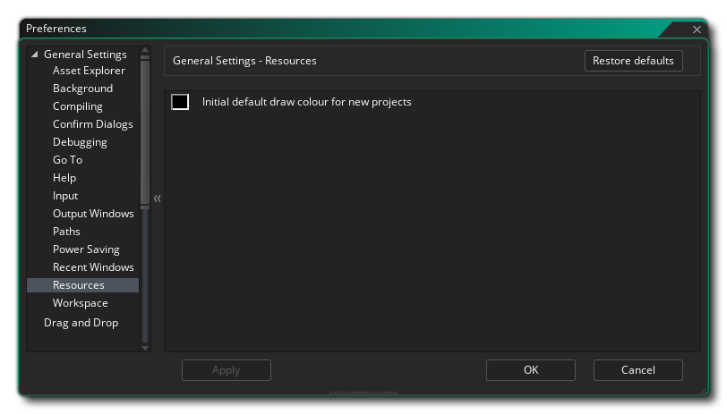

Die allgemeinen Einstellungen werden verwendet, um das allgemeine Verhalten der GameMaker Studio 2 IDE zu definieren. Die allgemeinsten sind auf der Hauptseite aufgelistet, während viele andere in mehrere Unterkategorien unterteilt sind, die weiter unten auf dieser Seite erklärt werden.
- IDE-Sprache: Mit dieser Option können Sie die Sprache für die IDE aus der Liste der angebotenen Optionen auswählen. Standard ist Englisch.
- IDE-Skin: Hier können Sie aus den verschiedenen Skins auswählen, die die IDE verwenden kann. Standardmäßig wird GameMaker Studio 2 mit zwei Skins ausgeliefert, einem hellen und einem dunklen, und bei der anfänglichen Einrichtung wird die dunkle Skin verwendet.
- Standard-Audiogerät: Hier können Sie das Standard-Audiogerät für die zu verwendende GameMaker Studio 2 IDE auswählen. Sie können die Liste aktualisieren, indem Sie auf die Schaltfläche Aktualisieren klicken

- Automatische Antwort auf Beenden-Bestätigung: Mit dieser Option können Sie festlegen, ob beim Beenden von GameMaker Studio 2 eine Bestätigungsmeldung angezeigt werden soll. Standardmäßig ist dies auf "OK" eingestellt. Sie können jedoch festlegen, dass die Nachricht so übersprungen wird, als ob Sie auf OK geklickt hätten.
- Benachrichtigungen aktivieren: Wenn Sie diese Option aktivieren, zeigt die IDE Benachrichtigungen zu neuen Laufzeiten usw. an. Diese Option ist standardmäßig aktiviert.
- Benachrichtigungs-Timeout (ms): Hier wird die Länge der Zeit (in Millisekunden) festgelegt, für die eine Benachrichtigung angezeigt wird. Standard ist 6000.
- Geänderte Dateien automatisch neu laden: Wenn diese Option aktiviert ist, wird die IDE automatisch Dateien prüfen und prüfen, um zu sehen, ob einige von ihnen außerhalb von GameMaker Studio 2 geändert wurden, und sie neu laden, wenn sie dies getan haben.
- Neue Ressourcen zum Bearbeiten bei Erstellung öffnen: Wenn diese Option aktiviert ist, wird bei jedem Erstellen einer neuen Ressource im Ressourcenbaum automatisch der entsprechende Ressourceneditor geöffnet. Dies ist standardmäßig aktiviert und wenn Sie die Prüfung aufheben, müssen Sie alle neu erstellten Ressourcen manuell öffnen.
- Öffnen Sie neue Ressourcen zum Bearbeiten beim Ziehen von Dateien in IDE: Bestimmte Ressourcen (wie Sprites oder Sounds) können auf den Hauptarbeitsbereich in der GameMaker Studio 2 IDE gezogen werden und werden als neue Ressource im Ressourcenbaum erkannt und hinzugefügt. Standardmäßig wird in diesem Fall auch der entsprechende Ressourceneditor zur Bearbeitung geöffnet. Wenn Sie diese Option jedoch nicht markieren, werden die Editoren nicht geöffnet und Sie müssen sie manuell öffnen.
- Zulassen, dass leere Tabs über eine Verknüpfung geschlossen werden: Sie können alle geöffneten Tabs mit der Tastenkombination schließen
 /
/  + W, aber wenn Sie diese Option deaktivieren, funktioniert die Verknüpfung nicht mehr. Dies ist standardmäßig aktiviert.
+ W, aber wenn Sie diese Option deaktivieren, funktioniert die Verknüpfung nicht mehr. Dies ist standardmäßig aktiviert. - Deaktivieren von IDE-Übergangsanimationen: Die GameMaker Studio 2- IDE verfügt über eine Reihe von animierten Übergängen für Dinge wie das Öffnen von Fenstern usw. Sie sind jedoch nicht jedermanns Geschmack und können leistungssteigernd wirken, wenn sie auf älteren oder weniger leistungsfähigen Maschinen deaktiviert sind Sind deaktiviert. Sie können sie hier deaktivieren, und sie sind standardmäßig aktiviert.
- Begrüßungsbildschirm beim Start anzeigen: Dies ist standardmäßig aktiviert und weist GameMaker Studio 2 an, beim Start des Programms einen kurzen Begrüßungsbildschirm anzuzeigen. Wenn Sie diese Option deaktivieren, wird der Begrüßungsbildschirm nicht angezeigt.
- DPI- Überschreibung aktivieren: Mit dieser Option können Sie die Standard-DPI-Einstellung mit Ihren eigenen überschreiben. Sie müssen zuerst die Option aktivieren und dann entweder den Raw DPi Override- Wert (der Standardwert ist 96) oder den Prozentsatz des nativen DPi festlegen und nach dem Ändern werden Sie aufgefordert, die IDE neu zu starten Arbeiten am derzeit offenen Projekt.
- Opt-in Feedback-Umfragen: Wenn diese Option aktiviert ist, weisen Sie GameMaker Studio 2 dass Sie an Feedback-Umfragen teilnehmen möchten. Das bedeutet, dass gelegentlich während der Bearbeitung eine Nachricht über den Bereich angezeigt wird, an dem Sie gerade arbeiten und eine Bewertung anfordern Feedback. Diese Option ist standardmäßig aktiviert.
Die obigen Optionen sind die Hauptoptionen, die in den allgemeinen Einstellungen verfügbar sind. In den folgenden Unterkategorien stehen Ihnen jedoch einige zusätzliche Optionen zur Verfügung:
Wenn Sie einem Objekt ein Sprite hinzufügen oder wenn Sie eine Schriftart in Drag & Drop oder in einer beliebigen Anzahl von Situationen verwenden möchten, wird Ihnen der Asset Explorer angezeigt:
Standardmäßig wird sowohl eine Baumansicht (links) als auch eine Listenansicht (rechts) angezeigt, aber mit dieser Einstellung können Sie festlegen, dass nur das eine oder das andere angezeigt wird.
Die Hintergrundeinstellungen behandeln den Hintergrund des Arbeitsbereichs und dessen Anzeige sowie die Art der Anzeige. Die Optionen sind:
- Hintergrundbild: Dies ist die Bilddatei, die als Hintergrund für die verschiedenen Arbeitsbereiche verwendet wird. Es wird ein Standardbild bereitgestellt, das standardmäßig aktiviert ist. Sie können hier jedoch ein eigenes Bild auswählen. Die Bildtypen, aus denen Sie auswählen können, sind *.png, *.gif, *.jpg, *.jpeg, *.tif, *.tiff, *.ico, *.bmp, *.2bp oder *.mdi Beachten Sie jedoch, dass unabhängig vom ursprünglichen Bildformat alle Dateien zur Verwendung als gespeichert werden *.png Dateien, so animiert *.gif Dateien werden zum Beispiel nur als ein einzelnes Anfangsbild gerendert.
- Bildskalierung: Hier legen Sie fest, wie das Hintergrundbild in den verschiedenen Arbeitsbereichen skaliert wird. Die Auswahlmöglichkeiten sind:
- Strecken - Das Bild wird so gestreckt, dass es in den Arbeitsbereich passt, wobei sich die Skalierung je nach den sichtbaren Docks ändert
- Kachel - Das Bild wird gekachelt, um den Arbeitsbereich abzudecken
- Optimale Anpassung - Das Bild wird so skaliert, dass es proportional zum Arbeitsbereich passt. Wenn es keine 1: 1-Anpassung gibt, werden Balken an der Kante hinzugefügt
- Desktop Stretch - Der Hintergrund deckt den gesamten Arbeitsbereich ab, unabhängig von sichtbaren Docks
- Hintergrundbilder in Arbeitsbereichen anzeigen: Diese Option steuert, ob das ausgewählte Hintergrundbild angezeigt werden soll oder nicht. Standardmäßig ist dies aktiviert.
Die Voreinstellungen zum Kompilieren betreffen bestimmte Optionen in Bezug auf die Ausgabe, wenn Sie Ihr Spiel zum Testen oder Erstellen eines Pakets kompilieren, sowie bestimmte Bereiche des Kompilierungsvorgangs. Die Optionen sind:
- Syntaxfehlerfenster bei Erkennung automatisch öffnen: Aktivieren oder deaktivieren Sie die Syntaxfehlerbenachrichtigung beim Kompilieren. Dies ist standardmäßig deaktiviert.
- Zeige das Kompilierfenster während des Kompilierens: Standardmäßig wird das Kompilierfenster angezeigt, wenn du deine Projekte kompilierst, selbst wenn das Kompilierdokument geschlossen ist (es wird für das Kompilieren geöffnet). Wenn Sie dies abwählen, wird dieses Verhalten deaktiviert und das Kompilierfenster wird sichtbar, wenn es geöffnet ist.
- Compilerbefehle in Kompilierausgabe anzeigen: Dies ist standardmäßig aktiviert und erzwingt, dass der Compiler alle relevanten Befehle im Kompilierfenster anzeigt. Wenn Sie diese Option nicht markieren, wird die Ausgabe kleiner und hat weniger Informationen.
- Compose-Ausgabe anzeigen: Wenn Sie diese Option aktivieren, wird der Compiler gezwungen, zusätzliche Befehle anzuzeigen, die sich auf den Kompilierungsprozess beziehen. Im Allgemeinen wird dies nur beim Debuggen benötigt und kann vom Support angefordert werden, wenn Sie ein Problem haben. Es ist standardmäßig deaktiviert (und dies ist die empfohlene Einstellung).
- Show package im explorer bei Build completion: Wenn Sie diese GameMaker Studio 2 öffnet GameMaker Studio 2 das OS Explorer-Fenster an dem Ort, an dem das endgültige ausführbare Paket erstellt wurde. Es ist standardmäßig aktiviert.
- Lösche Ausgabefenster beim Kompilierstart: Standardmäßig löscht das Compiler-Fenster alle vorherigen Nachrichten aus dem Kompilier-Ausgabefenster zu Beginn jedes Builds. Wird diese Option jedoch nicht angekreuzt, bleiben die vorherigen Compiler-Protokolle erhalten. Dies ist standardmäßig aktiviert und ist die empfohlene Konfiguration, da große Compiler-Protokolle die Kompilierungszeiten verlangsamen können.
- Debugger-Port: Hier wird die Portnummer für das zu verwendende Debug-Modul festgelegt. Der Standardwert ist 6509.
- Maximale Anzahl paralleler Kompilierungsjobs: Dieser Wert legt die maximale Anzahl von CPU-Kernen fest, die zum Kompilieren eines Projekts verwendet werden sollen. Der Standardwert ist 8 und im Allgemeinen sollten Sie dies nicht ändern müssen. Wenn Sie sich jedoch auf einem Laptop oder einem niedrigeren Rechner befinden, sollten Sie diesen Wert verringern. Der Standardwert ist auf 8 festgelegt.
Die Confirm Dialogue-Einstellungen behandeln einige der allgemeinen Bestätigungs-Popups, die beim Ausführen bestimmter Aktionen in der GameMaker Studio 2 IDE angezeigt werden. Die Optionen sind:
- Automatische Antwort beim Schließen eines Arbeitsbereichs über eine Tastenkombination: Mit der oben genannten Tastenkombination können Sie jede geöffnete Registerkarte schließen, aber manchmal können Sie versehentlich eine leere Registerkarte schließen, die Sie benötigen. Um dies zu verhindern, können Sie diese Option auf "Nachricht anzeigen" (die Standardoption) setzen, um zu fragen, ob Sie diese leere Registerkarte wirklich schließen möchten. Die anderen Einstellungen sind "Nein", um einfach nichts zu tun, wenn die Verknüpfung verwendet wird, oder "Okay", um die Registerkarte ohne eine Nachricht zu schließen.
- Automatische Antwort beim Neustart eines laufenden Builds: Wenn Sie einen Build neu starten und ein anderer vorheriger Build ausgeführt wird, werden Sie gefragt, ob Sie den aktuellen Build zuerst stoppen möchten. Durch das Deaktivieren dieser Nachricht wird diese Nachricht unterdrückt und GameMaker Studio 2 gezwungen, anzunehmen, dass Sie auf "OK" als Antwort geklickt haben. Diese Option ist standardmäßig auf "Nachricht anzeigen" eingestellt.
- Automatische Antwort auf Warnung beim Versuch, YYC zu debuggen: Das YYC-Ziel wird in nativen Code kompiliert und kann daher nicht mit dem integrierten Debugger debuggt werden. Wenn Sie versuchen, den Debugger auf dem YYC-Ziel zu verwenden, erhalten Sie eine Warnung, die Sie darüber informiert, und die Tatsache, dass das Projekt stattdessen mit der VM kompiliert wird. Diese Option ist standardmäßig auf "Nachricht anzeigen" eingestellt, aber wenn sie auf "OK" gesetzt wird, wird diese Warnung unterdrückt.
- Automatische Antwort beim Zurücksetzen des Projektlayouts: Wenn Sie das Projektlayout zurücksetzen (im Menü "Layouts" ), wird standardmäßig eine Warnmeldung angezeigt, wie alle geöffneten Ressourcenfenster geschlossen werden. Sie können diese Meldung jedoch unterdrücken und das Layout automatisch zurücksetzen, indem Sie "OK" wählen, oder Sie können nichts tun, indem Sie "Nein" wählen. Der Standardwert ist "Nachricht anzeigen".
- Automatische Reaktion auf das Deaktivieren anonymer Statistiken: Wenn Sie die anonymen Spielstatistiken in den Optionen für das allgemeine Spiel deaktivieren, wird eine Warnmeldung angezeigt, in der Sie aufgefordert werden, die Option sorgfältig zu berücksichtigen. Sie können diese Meldung unterdrücken, indem Sie hier "OK" wählen oder nichts tun, indem Sie "Nein" wählen. Der Standardwert ist "Nachricht anzeigen".
Die Einstellungen beziehen sich auf den GameMaker Studio 2 Debugger und Sie haben folgende Möglichkeiten:
- Automatische Antwort beim Schließen des Debuggers: Mit dieser Option können Sie die automatische Antwort beim Schließen des Debuggers festlegen. Wenn Sie "Nachricht anzeigen" wählen, wird Ihnen der Dialog angezeigt, wenn Sie den Debugger schließen möchten. Wenn Sie ihn auf "Ja" oder "Nein" setzen, wird dieser Dialog nicht angezeigt und die Aufgabe wird wie angegeben ausgeführt.
- Echtzeit-Debugging aktivieren: Wenn Sie diese Option aktivieren, können Sie Ihre Spielprojekte in Echtzeit debuggen, während Sie sie von der IDE aus ausführen. Dies ist standardmäßig aktiviert.
Die Voreinstellungen hier sind für das Gehe zu- Fenster, das Sie mit der Tastenkombination öffnen können
- Maximale Anzahl der anzuzeigenden Suchergebnisse: Diese Option steuert die maximale Anzahl der zurückgegebenen Ergebnisse, wenn Sie das Gehe zu Suchfenster verwenden.
Die Hilfedatei ist so konzipiert, dass sie wie eine Webseite funktioniert und erfordert daher die Verwendung des GameMaker Studio 2 Micro-Webservers oder die Verwendung eines externen Browsers. Diese Einstellungen können hier geändert werden:
- Help manual port: Hier wird die Portnummer für den manuellen Micro-Web-Server festgelegt. Der Standardwert ist 51291.
- Verwenden Sie einen externen Browser, um Hilfe zu erhalten: Wenn diese Option aktiviert ist, wird sie beim Öffnen der Hilfedatei mit dem Standardbrowser für Ihr System geöffnet. Diese Option ist standardmäßig aktiviert. Wenn Sie sie deaktivieren, wird die Hilfedatei im Arbeitsbereich der IDE geöffnet.
Die Eingabepräferenzen steuern bestimmte Aspekte der Maus- und Tastatureingabe innerhalb der IDE. Die verfügbaren Optionen sind:
- Langsame Doppelklickzeit (ms): Einige Bereiche der IDE benötigen einen langsameren Doppelklick, um beispielsweise beim Umbenennen einer Ressource korrekt zu funktionieren (ein schneller Doppelklick öffnet den Ressourceneditor, während ein langsamer Doppelklick das Umbenennen ermöglicht) ). Mit dieser Option können Sie die Erkennungsgeschwindigkeit mit einem Standardwert von 500ms festlegen.
- Scroll Lock Time (ms): Diese Option behandelt die Zeit, die GameMaker Studio 2 zwischen überlappenden Fenstern warten soll. Im Wesentlichen, wenn Sie im Fenster "A" scrollen, bewegt sich der Cursor möglicherweise über einen anderen scrollbaren Bereich im Fenster "B", so dass diese Einstellung definiert, wie lange Sie warten müssen, bevor Sie "A" scrollen, bevor Sie blättern können " B ", damit Sie nicht versehentlich verschiedene Panels scrollen. Der Standardwert ist 500ms.
- Scrollgeschwindigkeit: Hiermit wird die Scrollgeschwindigkeit in den verschiedenen Arbeitsbereichen gesteuert. Der Standardwert ist 1.
- Tabulator-Ziehen-Abstand zum Unmaximieren des Desktops (px): Wenn Sie einen Arbeitsbereich-Tabulator von seiner Standardposition innerhalb der IDE wegziehen, wird das GameMaker Studio 2 Fenster nicht maximiert und bewegt sich mit, wenn zu diesem Zeitpunkt nur ein aktiver Arbeitsbereich aktiv ist die Maus (wenn mehr als ein Arbeitsbereich aktiv ist, wird eine neue Instanz der IDE für den Arbeitsbereich erstellt). Diese Einstellung steuert, wie weit Sie die Registerkarte ziehen müssen, bevor der Arbeitsbereich sie erkennt, und der Standardwert ist 50px.
- Minimale Zoomstufe für die Interaktion mit Fensterinhalten (%): Diese Option steuert den Zoom-Cut-Off-Punkt, bei dem die Maus nicht mehr mit den Arbeitsbereichsfenstern interagieren kann (dh: Knoten hinzufügen, Fenster ziehen usw.). Der Standardwert ist 40.
- Mausrad-Zoom erfordert Strg-Taste: Wenn diese Option aktiviert ist, wird für alle Editoren (und den Hauptarbeitsbereich) Zoom aktiviert
Wenn Sie das Kontrollkästchen deaktivieren, wird der Zoom nur mit dem Mausrad aktiviert
Die Voreinstellungen für das Ausgabefenster steuern die verschiedenen Farb- und Formatierungsoptionen für die verschiedenen Ausgabefenster in der IDE. Jedes der verschiedenen Fenster hat die gleichen Optionen, die im Folgenden aufgelistet sind:
- Farbe: Die Standardfarbe für den Text, der in das Fenster geschrieben wird.
- Font Name: Der Name der Schriftart zu verwenden (verfügbare Schriftarten werden auf denjenigen, die auf dem System installiert ist abhängig).
- Stil: Der zu verwendende Schriftstil, wie fett oder kursiv (beachten Sie, dass nicht alle Fenster die gleichen Stile zulassen und dies auch von der verwendeten Schriftart abhängt).
- Größe: Die Größe, um die Schriftart für das angegebene Ausgabefenster festzulegen.
- Anti-Aliasing: Hier können Sie den Anti-Aliasing-Modus für das Rendern der Ausgabefenster festlegen. Sie können wählen, die IDE, indem Sie Standard verwenden entscheiden zu lassen, oder Sie können es auf Ein oder Aus erzwingen, indem eine dieser Optionen auswählen.
Die Path-Einstellungen steuern die verschiedenen Dateipfade, die von Elementen in der GameMaker Studio 2 IDE sowie für externe Editoren benötigt werden. Die folgenden Optionen gibt es für die IDE:
- Temp-Verzeichnis: Der Speicherort für alle temporären Ordner. Standardmäßig ist dies \Users\<Username>\AppData\Local\Temp\GameMakerStudio2.
- IDE-Cache-Verzeichnis: Der Speicherort für den IDE-Cache. Standardmäßig ist dies \Users\<Username>\AppData\Roaming\GameMakerStudio2-Dev\Cache.
- Asset-Cache-Verzeichnis: Der Speicherort für den Asset-Cache für jedes Projekt. Standardmäßig ist dies \Users\<Username>\AppData\Roaming\GameMakerStudio2-Dev\Cache.
- Standort "Meine Projekte": Der Ort, an dem GameMaker Studio 2 anfänglich neue Projekte erstellt. Standardmäßig ist dies \Users\<Username>\Documents\GameMakerStudio2.
- Temporäres Verzeichnis beim Schließen automatisch löschen: Wenn Sie dies GameMaker Studio 2 wird GameMaker Studio 2 gezwungen, automatisch den Temp-Ordner zu löschen, der zum Kompilieren pro Projekt erstellt wird. Diese Einstellung ist standardmäßig aktiviert, und wenn Sie sie nicht aktivieren, wird sie deaktiviert Sie müssen später alle temporären Dateien manuell entfernen).
- Automatisches Löschen des Asset-Caches beim Schließen: Wenn diese Option GameMaker Studio 2 ist, wird der Cache-Ordner des Asset-Compilers beim Beenden von GameMaker Studio 2. Dies ist standardmäßig deaktiviert, und wenn Sie es aktivieren, bedeutet dies, dass jedes Mal, wenn Sie ein Projekt laden und ausführen, der Cache neu aufgebaut werden muss (was je nach Größe des Spiels einige Zeit dauern kann).
- Automatisches Löschen des IDE-Cache beim Schließen: Wenn diese Option aktiviert ist, wird der IDE-Compiler-Cache-Ordner beim Beenden von GameMaker Studio 2. Dies ist standardmäßig deaktiviert und wenn Sie es aktivieren, muss der Cache jedes Mal neu gestartet werden, wenn Sie GameMaker Studio 2 starten.
- Temporärer Ordner löschen: Wenn Sie auf diese Schaltfläche klicken, wird der temporäre Ordner für das Projekt gelöscht.
- Asset-Cache löschen: Wenn Sie auf diese Schaltfläche klicken, wird der Compiler-Asset-Cache für das Projekt gelöscht.
- IDE-Cache löschen: Wenn Sie auf diese Schaltfläche klicken, wird der IDE-Cache gelöscht.
Für das Setzen von Pfaden zu externen Editoren gibt es folgende Möglichkeiten:
- Pfad zum externen Editor / Viewer für SWF-Dateien: Wenn Sie mit Sprites im SWF-Format arbeiten, können Sie dies auf den Pfad Ihres bevorzugten Viewers / Editors einstellen. Wenn Sie im Sprite-Editor auf die Schaltfläche Bild bearbeiten klicken, wird der angegebene Editor geöffnet Programm. Der Standardwert hier ist, keinen Pfad zu haben.
- Pfad zum externen Editor / Viewer für Spine-Dateien: Wenn Sie mit Spine-Format-Sprites arbeiten, können Sie dies auf den Pfad Ihres bevorzugten Viewers / Editors einstellen und wenn Sie im Sprite-Editor auf die Schaltfläche Bild bearbeiten klicken, wird der angegebene Editor geöffnet Programm. Der Standardwert hier ist, keinen Pfad zu haben.
Die hier beschriebenen Stromspareinstellungen haben Einfluss darauf, wie viel CPU-Leistung und GPU-Leistung für die GameMaker Studio der GameMaker Studio 2- IDE verwendet wird (dies senkt im Wesentlichen die Grundbildfrequenz, mit der das Programm läuft, und verringert so den Stromverbrauch). Beachten Sie, dass einige davon spezifisch für den Dateiwächter- Hintergrundprozess sind. Der File Watcher durchsucht die Projektordner nach externen Änderungen - wenn Sie beispielsweise ein gml-Skript in Notepad ++ ändern, wird der Dateiwatcher diese Änderung erkennen und Sie fragen, ob Sie ihn neu laden oder verwerfen möchten - und damit die Häufigkeit, mit der er scannt Dies kann die Leistung und den Stromverbrauch stark beeinträchtigen.
Die Optionen hier sind:
- AC-Leistungs-Framerate (%): Der Basis-IDE-Framerate-Modifikator, wenn er an einen Stromeingang angeschlossen ist. Standard ist 100%.
- Batterieleistungs-Framerate (%): Der Basis-IDE-Framerate-Modifikator, wenn die Batterie zur Stromversorgung der Maschine verwendet wird. Standard ist 35%.
- Hintergrund-Framerate (%): Der Basis-IDE-Framerate-Modifikator, wenn GameMaker Studio 2 nicht fokussiert ist (unabhängig von der Stromversorgung). Standard ist 15%.
- Häufigkeit des Dateiwatchers (ms): Dies ist die Häufigkeit, mit der der Dateiwatcher auf dem Desktop (oder einem angedockten Laptop) ausgeführt wird. Der Standardwert ist 2000.
- Häufigkeit des Dateiwatchers (ms): Dies ist die Häufigkeit, mit der der Dateiwächter im Laptop-Modus ausgeführt wird. Standard ist 5000.
Die Einstellungen hier enthalten Optionen für die Anzeige der Liste Zuletzt verwendete Windows:
- Beim Laden des Projekts automatisch öffnen: Wenn diese Option aktiviert ist, wird beim Laden eines neuen Projekts die Liste der zuletzt geöffneten Fenster angezeigt. Standard ist deaktiviert.
- Fokussierte Fenster nach oben verschieben: Wenn dies aktiviert ist und Sie auf ein Objekt in der Liste "Letztes Fenster" klicken, wird das ausgewählte Objekt an den Anfang der Liste verschoben. Standardmäßig ist dies deaktiviert.
- Nur aktuell geöffnete Fenster anzeigen: Wenn Sie diese Option aktivieren, werden in der Liste Zuletzt verwendete Windows die Elemente entfernt, die in einem Arbeitsbereich nicht mehr geöffnet sind (dh wenn Sie ein beliebiges Fenster schließen, wird es ebenfalls aus der Liste entfernt). Standardmäßig ist dies deaktiviert.
- Maximal anzuzeigende Fenster: Hier wird die maximale Anzahl der zuvor geöffneten Fenster festgelegt, die in der Liste der zuletzt geöffneten Fenster angezeigt werden. Standard ist 10.
Die Voreinstellungen enthalten Optionen, wie bestimmte Ressourcen in Ihren Projekten gezeichnet werden:
- Anfängliche standardmäßige Zeichenfarbe für neue Projekte: Wenn Sie eine Schriftart verwenden oder eine Form zeichnen, indem Sie die Funktionen von GameMaker Studio 2 oder DnD™ verwenden, ohne eine Farbe anzugeben, wird die hier festgelegte Farbe verwendet. Die Standardfarbe ist Schwarz ( $00000000 ).
Die Voreinstellungen beeinflussen, wie Sie sich in den verschiedenen Arbeitsbereichen von GameMaker Studio 2 bewegen. Die Optionen sind:
- Arbeitsbereich Tastaturnavigationsgradbereich: Innerhalb eines Arbeitsbereichs können mehrere Fenster für verschiedene Objekte und Ressourcen geöffnet sein. Um sich schnell zwischen ihnen zu bewegen, können Sie die Tastenkombination verwenden
+ <Arrow Keys> sich zwischen ihnen bewegen. Da die Fenster innerhalb eines Arbeitsbereichs nicht gerastert sind, muss die IDE wählen, welches Fenster gemeint ist, wenn Sie eine der möglichen 8 Richtungen drücken. Mit dieser Option können Sie den verwendeten "Blickwinkel" festlegen. Der Standardwert ist 40 °.
- Workspace chain column padding (px): Workspace-Elemente sind oft miteinander "verkettet" (zum Beispiel ist der Code-Editor mit dem Event-Editor verkettet an den Objekteditor angekettet), und mit dieser Option können Sie den horizontalen Abstand dazwischen einstellen irgendwelche zwei verketteten Fenster. Der Standardwert ist 30px.
- Workspace Chain Row Padding (px): Wie bereits erwähnt, sind Workspace-Elemente oft miteinander "verkettet" und diese Option ermöglicht es Ihnen, den vertikalen Abstand zwischen zwei verketteten Fenstern festzulegen. Der Standardwert ist 20px.
- Segmentanzahl der Workspace-Kette: Hier können Sie die maximale Anzahl von Segmenten für Renderketten festlegen. Wenn Sie diesen Wert verringern, kann dies die Leistung der unteren Rechner verbessern. Der Standardwert ist 20.
- Workspace chain link color: Dies ist die Farbe, die zum Anzeigen von Ketten zwischen Arbeitsbereichselementen verwendet wird. Die Standardfarbe ist $99DD00 mit einem Alpha von 153 ( $99 ).
- Workspace Keyboard Navigation setzt Zoom zurück: Wie oben erwähnt, können Sie innerhalb des Arbeitsbereichs von Fenster zu Fenster über Tastaturkürzel springen. Sie können den Arbeitsbereich auch mit der Taste vergrößern und verkleinern
. Wenn Sie diese Option aktivieren, bedeutet dies, dass der Arbeitsbereich in eine 1: 1-Ansicht und auf das ausgewählte Fenster zentriert wird, wenn Sie den Arbeitsbereich vergrößern und die Verknüpfungen verwenden, um zu einem anderen Fenster zu springen. Diese Option ist standardmäßig deaktiviert.
- Arbeitsbereichsketten können sich überlappen: Wenn diese Option aktiviert ist, können Arbeitsbereichs-Ketten sich überschneiden und überlappen. Dies ist standardmäßig deaktiviert.